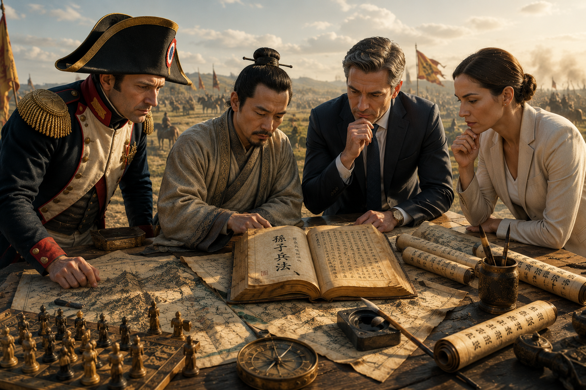

Un clásico eterno
Más de 2.300 años hablando sobre estrategia.
El Arte de la Guerra es una obra única en la historia de la literatura universal. Nació como un tratado militar, pero sus ideas han trascendido la guerra para influir en la economía, la política, la filosofía, el liderazgo y la gestión de conflictos.
Su fuerza está en la claridad: comprender el terreno, medir al adversario, dominar el tiempo, conservar la calma y vencer antes de combatir.
Edición comentada
Un clásico explicado para el lector actual.
Esta edición acompaña el texto de Sun Tzu con comentarios pensados para acercar sus ideas al mundo contemporáneo.
No se trata solo de leer un texto antiguo, sino de entender por qué sus enseñanzas siguen apareciendo en la empresa, la negociación, el liderazgo, la política y la vida diaria.
